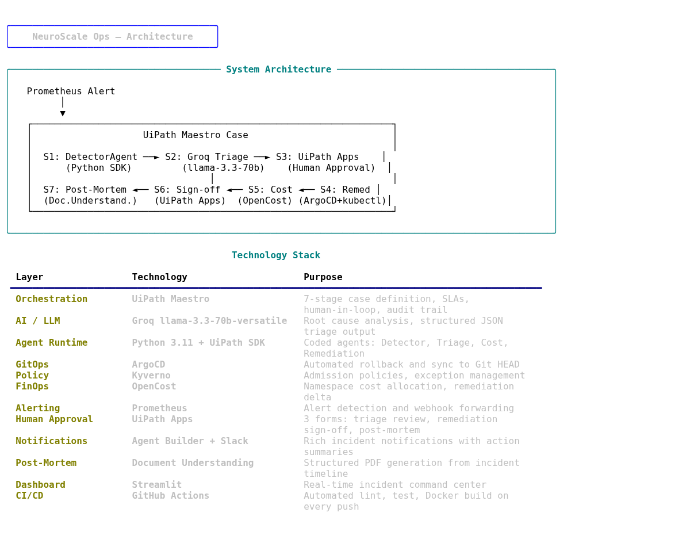

03 / 08
Architecture
How
NeuroScale Ops
Works End-to-End
7 stages. 5 agents. Full automation with human oversight.

UiPath Component Mapping
🔍
Stages 1–2: Detect + AI Triage
Python Coded Agent monitors Prometheus alerts. Groq llama-3.3-70b-versatile performs root cause analysis with structured JSON output and rule-based fallback.
Coded Agent + API Workflow
💰
Stage 3: Cost Impact Analysis
OpenCost API Workflow calculates namespace-level spend, remediation cost delta, and budget utilization before any human sees the request.
UiPath Integration Service
👤
Stages 4 + 6: Human-in-the-Loop
UiPath Apps forms surface AI reasoning + cost data to the SRE. One-click approval gates with 15-minute SLA escalation and full role-based assignment.
UiPath Apps + Maestro HITL
⚡
Stage 5: Autonomous Remediation
ArgoCD rollback, kubectl patch, scale-down, or Kyverno exception — circuit breaker prevents runaway loops. Zero manual kubectl required.
Coded Agent + ArgoCD API
📄
Stage 7: Post-Mortem Generation
Document Understanding auto-generates a structured post-mortem PDF with timeline, root cause, cost impact, and runbook update recommendations.
Document Understanding